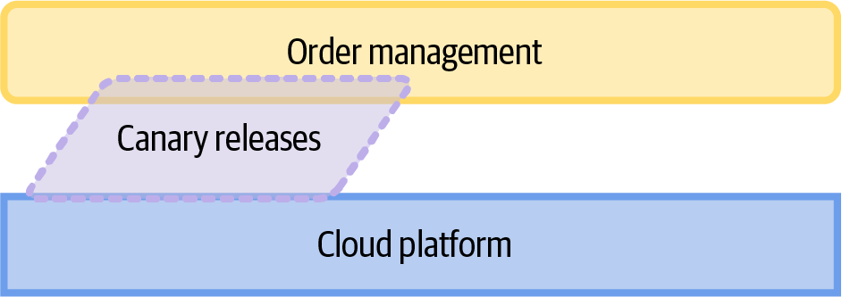
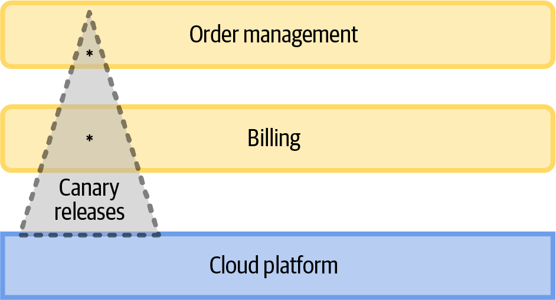
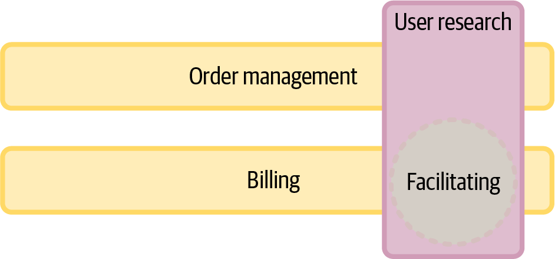

In the previous chapter, I discussed what makes for an effective team and included autonomy as a motivating factor. In this chapter, I’m going to make the case that autonomy isn’t just important for motivational reasons; it’s also essential for successfully adopting microservices.
Making sure teams are long-lived, cross-functional, the right size, and given responsibility for a stream of work that fits into their cognitive capacity creates teams that can be autonomous, but you also need ways of working in place that allow them to be autonomous. It’s no good having a team with all the right skills if you have processes that slow them down by requiring them to go through multiple gates to get work scheduled or to get changes to production.
Throughout this chapter I’ll dig into how to support the autonomy of teams in your organization through the ways that you work.
I’ll also talk about effective ways for teams to interact, again drawing on the ideas laid out by Matthew Skelton and Manuel Pais in their book Team Topologies that I explored a bit in Chapter 5.
And finally, we’ll discuss the responsibilities of autonomous teams. It’s not all fun and games, and it’s not a free-for-all. Autonomy should exist to support the business (but it also makes working a lot more enjoyable, in my experience).
Let me start by explaining what autonomy is, and why it matters.
Autonomy is the freedom to decide what you are going to do and how you are going to do it.
At the lowest level, autonomy for a software development team means that the team gets to release changes to production when it decides the changes are ready, rather than needing signoff by some external quality or change management team or having to wait for an operations team to do the release.
At a higher level, you may have a business outcome in mind—for example, that you want to reduce the number of your subscribers that opt out at renewal. There are lots of things you could do, and an autonomous team will be free to decide which to tackle first. In fact, you’ll probably want to experiment and see what the impact is.
The key thing is that no one outside your team needs to sign off on your approach.
Every time a piece of work goes into a queue, waiting for someone to pick it up, you are having a negative impact on the flow of work and as a result, the flow of business value. Sometimes, this is a literal queue—for example, a ticket opened that someone needs to access. Other times, it’s a metaphorical queue; maybe you’re waiting for a meeting to happen before the work can progress.
Where the queue is within a single team, you can set priorities to maximize that flow: for example, you can decide that testers “shift left” to collaborate with developers and write tests alongside code; or that developers should do their own testing, and their own deployment to production, rather than waiting for someone else to do that. Where the queue is outside your team, you will likely find it hard to align your priorities, and that means waiting for someone else to do something. Examples from my own experience include waiting for a change advisory board (CAB) to meet once a week to OK releases to test; waiting for the monthly production release slot; and waiting several months for a server to be set up and configured for a new application.
Evan Bottcher calls this “backlog coupling” in his article about the benefits of effective internal platforms (which I’ll discuss in Chapter 7), and research carried out by his Thoughtworks colleagues at an Australian telecommunications company showed that tasks that had to wait for another team were 10–12 times slower in elapsed time. That’s significant!
If you move to microservices but you still have these kinds of dependencies, you will struggle to realize the benefits of a microservice architecture. After all, for a fast flow of value, you need your teams to be able to release a new feature to production with minimal coordination with anyone outside the team.
It would be a mistake to think that “autonomy” means “I can do whatever I want.” There are boundaries.
Teams don’t have complete freedom. The obvious first constraint is that they need to be aligned to a particular domain. You can’t have a team deciding to build something in a completely different domain, particularly if that is owned by another team!1
Even within their domain, there should be something providing a direction of travel. For a stream-aligned team, that is likely to come from the business or product strategy. For a platform or enabling team, there will be some constraints from the tech strategy. For example, if the tech strategy says the organization is going to be all-in on serverless, then you don’t want an autonomous team spending time on tools for upgrading servers.
Jason Yip, in his write up of his thoughts on the Spotify model, says that autonomy should be framed as a responsibility not a benefit.
In fact, teams should think of autonomy as “we are both authorized and expected to do what is necessary to accomplish the mission,” rather than “we can do whatever we like.”
Team autonomy should always be framed within the context of a team’s goals. It’s the freedom to decide what you are going to do in the context of achieving a specific outcome, and within the constraints of your specific organization (for example, you may need to use services from a particular cloud provider).
More communication is not necessarily a good thing.
Matthew Skelton and Manuel Pais2
Communication should happen all the time within a team. People should be collaborating: reviewing design documents and code; talking about how they are going to deliver a particular piece of work; pairing or ensemble programming, etc. If that isn’t happening, you run the risk of silos developing within the team, where no one understands all of the domain the team is responsible for.
The clear benefit of communication within a team can lead us to think all communication is good, but that isn’t true.
Between teams, high-bandwidth and synchronous communication should be rare, because it couples the teams together.3 You need both teams to be available at the same time, which means juggling two schedules.
This doesn’t mean all communication with other teams is bad! You should expect to talk regularly with the teams that use your service or that provide services that you use, to understand changes in the interfaces or new requirements from the microservice consumers. Sometimes, that will mean working closely together for a period of time to agree on a new interface. I’ve found as an API provider that I need people actively working to consume a new API to get good feedback: comments on a written specification or design document never catch the important points.
What this all boils down to is that information flow is a key marker of that generative Westrum culture I discussed in Chapter 5 as the way an organization should work. The key takeaway from Westrum’s original article is that the necessary information gets to the “right person in the right form and in the right time frame.”
Modern chat tools make it easy to communicate, but if teams assume that everyone will read every message in their channel, that’s bad news for flow and productivity. People need to be able to focus on work without constant context switching. Key information needs to be shared in a format that people can access easily when they have time to engage with it. That could be a weekly status report, meeting minutes sent around by email, or documentation in a shared and searchable team workspace. Similarly, information shared in a town hall meeting should also be shared in other ways so that people can find it when they need it.
For that to work, someone will have to have made the information available, in a format that can easily be absorbed, and in a place where that person will know to look. For example, if you wrote a library to handle propagation of correlation IDs, you could provide a link to the repository within the guardrails that specify the correlation ID format.
Why is this so important? Easy access to the information you need, when you need it, is key to being able to act autonomously.
Team Topologies describes three types of interaction between teams and advises organizations to be very conscious of choosing an interaction style:
People from two teams working closely together for a period of time to achieve a specific outcome
A team with expertise works with another team to help and transfer knowledge to them
Domain-driven design (DDD) also has a lot to say about interaction styles, documenting these as “context maps”. There is a fair degree of overlap with Team Topologies, which is reassuring!4
Next, I’m going to focus on the Team Topologies categorization.
The different interaction styles will likely all be in place at different times and between different teams. For example, a platform team might collaborate with a stream-aligned team to introduce a new observability tool. When the next team wants to start using it, hopefully it will be available as a service, because the nuances and gotchas will have been worked through.
Collaboration is where two teams with different skill sets or domain knowledge work together. Both teams should be learning from each other.
Figure 6-1 shows an example of collaboration, using the Team Topologies modeling style.5

Because the teams need to work closely together, collaboration requires a pretty big commitment: you have to put all other priorities aside for at least some members of both teams, to align their schedules. You should probably save this for challenging and high-value pieces of work, and usually as a way of rapidly exploring and innovating at the boundary between the two teams.
The time to work closely together is when there is the most uncertainty—for example, when you are in a period of discovery, such as designing a new API, or introducing a way to do canary releases. When you are doing more routine work, you should be aiming for lower bandwidth modes of interacting.
One approach to collaboration is to form a feature team, where some people from two different teams join together for a particular purpose. The biggest challenges I’ve seen related to feature teams are firstly, making sure you understand who will own the things being built. It’s easy to find services that are in between and orphaned after the feature team disbands. And secondly, to make sure the team focuses on the short-term gains. Don’t spend a lot of time discussing your ways of working if this is only going to be a short-term thing (this means encouraging people to go with the flow!).
A form of collaboration that really worked for me at the FT was a secondment process, which means temporarily assigning members of one team to another. We did this when we were first forming teams working on enabling observability and insights (teams working as either platform or enabling teams). We got a commitment from our customer teams, the stream-aligned teams, to send people to us on secondment. This was generally for three months, which aligned to our OKR process and was long enough for people to be able to take on a significant piece of work.
There were three main benefits to this, although the logistics could be a challenge. First, we had a direct line to our customers, giving us a good idea if the things we were working on were going to be valuable and adopted. Second, we found that our secondees were our best advocates once they went back to their teams, helping our broader goals around observability and insights. They knew our tools and they would share that knowledge. And finally, they’d also continue to propose changes and improvements: they knew us, and felt comfortable giving us feedback.
One final point on collaboration. You will generally collaborate for a relatively short period of time, because of the commitment but also because working together for a longer period will blur the boundaries: you don’t want to merge the teams. It is also a fairly high-intensity way of working, with a high cognitive load. The end goal is generally to end up with services that subsequent teams can consume: the interaction then will be X-as-a-service.
This is an interaction style that minimizes the need to collaborate and focuses on supporting self-service. Another way of thinking of this is simple: one team provides a service and the other team consumes it (see Figure 6-2).

Often, this is the next stage after a collaboration stage: the solution found during collaboration is turned into a service that additional teams can start to use with low levels of friction.
In general, platform teams should do most of their work in this style: building self-service tools and creating great documentation. This approach increases efficiency and empowers individuals because it gives them ready access to the answers they need to move forward. For complicated services, they might collaborate with one team first to path find.
It is important that the team providing the service has a focus on the teams consuming the service. They need to support the service for the long term so that there are no unexpected or breaking changes. Additionally, they need to understand the consuming teams’ needs, which means that product management skills are a great asset here. It’s important to understand what the real problems are and whether the solutions the team has in mind are going to be attractive to other teams. I’ve seen teams invest time in a solution they liked, but that no stream-aligned team wanted to adopt.
I will talk more about this challenge in Chapter 7, which discusses engineering enablement and building a developer platform.
When one team has specific expertise, they can take on a facilitating style where their aim is to help the other team and transfer their knowledge to them (see Figure 6-3).

This is the main operating mode for enabling teams, because those teams are specialists in a particular domain. They should work with other teams to coach them in an unfamiliar technology, or to identify where there are gaps or inconsistencies in capabilities offered by other teams. It’s very much a consultancy model: engage to address a particular problem, then move on.
Sometimes an enabling team will be needed for a long time: many organizations have long-standing security, DevOps, or architecture teams.6 Sometimes, enabling teams will form for a particular challenge—for example, an organization might be moving to Kubernetes, and an enabling team helping each stream-aligned team to migrate can make this far more straightforward.
Platform teams can also act as facilitators. They can invest the time to understand problems that are affecting multiple stream-aligned teams. Often, this relates to common functionality like security engineering tools, observability, DNS, CDNs, or cloud provider offerings. For example, a central cloud team can keep on top of new announcements and make sure people are aware of improvements, such as new instance types or support for different programming languages.
You can set up a team with all the necessary skills, but they can’t be autonomous unless you align the ways you work to support that autonomy.
This means a focus on every place where people are having to wait for someone to do something, and trying to remove that gate.
It also means trusting your teams to do the right things, and helping them to know what those right things are.
Let’s go over some approaches that help teams to act autonomously.
If you are working on a team, you should expect some direction on what outcomes your team is targeting. But you should also have freedom on how you approach those outcomes.
Clarity is important: if a team doesn’t understand what they are meant to be doing, they are unlikely to be effective. As found in John Shook’s case study on successfully introducing Toyota production and management systems into a US car plant, “What changed the culture was giving employees the means by which they could successfully do their jobs. It was communicating clearly to employees what their jobs were.”
Clarity isn’t necessarily enough. Jason Yip has a great post on “aligned autonomy”, where he identifies several challenges.
The first is the “air sandwich.” This is where there is a clear high-level vision and people understand their day-to-day work, but they don’t see how the two connect.
“We want X, you figure it out” can be too large a gap. You need people in the middle to translate X into the context for those at the next level, to help create clear and actionable next steps.
At the FT, we had a high-level goal at one point of “March to 1 million” (subscribers). It was up to me, as lead on the content publishing platform, to find a way to link that to our work and communicate what was needed. For example, the importance of APIs that were easy for product teams to use to build new and enticing products had to be prioritized, alongside other concerns like accurate, timely publishing and a highly reliable software stack.
The second challenge is to make sure people hear the message they need to align to.
Too much information gets stored in a spreadsheet. Jason describes these as “information refrigerators.” You have to go and get the information from them (as opposed to “information radiators,” which share information without the receiver having to go through a lot of effort).
So, how do we transition to “information radiators”? I have found OKRs (objectives and key results), which I’ve used at the FT and elsewhere, are an effective way to plan work and align on outcomes.7 Objectives are goals, and should be significant, concrete, and clearly defined. Generally, these align to product or technical strategy. One example could be an objective to decommission your data center and move everything to the cloud. Key results are three to five measurable success criteria for each objective. For moving out of a data center, a good key result for a quarter could be to reduce the number of servers in the data center by 50%: this shows what progress you expect to make toward a goal that might take several quarters to get to.
While the FT mostly used spreadsheets to document OKRs, there was a process around this with regular meetings to review progress and to discuss related OKRs.8
As a technical director, OKRs helped alignment because I would work with teams to agree on objectives, either aligned to higher-level goals of the department or the business, or to my strategy for our group. Then the teams would define their own key results, giving us a chance to check that we were aligned.
You have to move away from processes that require people to ask permission or get signoff.
When I first worked at the FT, we had a regular CAB meeting. Every time I had code to release, I would need to go to the meeting, explain what the change was, and get agreement for it to go into the staging environment and then to production. When you have many people trying to make changes to the same codebase, this does make some sense: you do catch potential conflicts. But a better way to fix this is to move to smaller, independent, frequent changes. Recognizing this, we removed the shared staging environment and dismantled the CAB.
This change enabled us to let the people with the most context about a change make the decision on when it was ready to go to production, and we let them go ahead and do that at will.
We still had a small friction there, though. Every change had to be logged, along with information on how to undo the change. I think this is a very valuable practice (and will talk about it in Chapter 13), but logging the changes was being done via a GUI, so it took time. I particularly enjoyed having to enter in the timestamp for when I would start and finish the change I was about to make, then finding the start timestamp was in the past by the time I got to submitting the form, so the change got rejected.
Raising manual change requests becomes a bottleneck once you are releasing tens of times a day. You really don’t want to spend hours every day on this! So, we automated it. The majority of changes were logged as part of a build and release pipeline, using the information already available about who had initiated the build and the Git commit details. We didn’t have to document how to roll things back, because for anything released through a pipeline, that’s automated too. For changes being made outside an automated process, we had an API that people could call.
There are two challenges with these sorts of changes. First, for every gate on the way to production, you have people who are the gatekeepers. That could be testers, operations, or security. You are removing some of their responsibilities and you need to convince them that this is an improvement, and is going to let them focus on higher-value stuff.
The second is to provide guidance to engineering teams about what the expectations are around quality, security, etc. They need to be able to evaluate whether code is ready to release. These guardrails and how to go about setting them up are discussed in Chapters 7 and 11.
Trust teams to take action, but verify that they did or are doing the right thing if you need to for governance reasons (see Chapter 11 for a lot more about governance).
Some examples of this include:
Rather than getting up-front signoff to do something, audit that it took place. This can be an audit that an expected thing happened, or that an unexpected thing happened: an example at the FT was an automated alert in the main operational support channel in Slack if anyone logged in to the root AWS account. This would then be responded to by the person making a root-level change (one of a small team of people) to confirm that it was them. No confirmation would mean unauthorized access.
Allow access to APIs through self-signup, but throttle heavily, and check what people are sending in through a preprocessing validation step. Basically, protect the service from mistakes (I have seen my servers get taken out by 30,000 requests accidentally sent in parallel and I consider that to be my error, in not setting an appropriate throttle on the API).
Teams don’t need—and generally don’t want—total autonomy around the technology they choose. Normally, the place where freedom to choose technology matters is for business differentiators. An example of this is where a new product or feature would be far easier to build using a new type of data store.
However, teams will also want to try out new technology because it lets them learn new skills, or because they think it’s better than whatever is currently being used. This is what leads to a team building their own CI/CD solution out of lambdas or introducing a new programming language. You don’t want to completely block this type of initiative: I’ve seen a programming language change be very effective, speeding up delivery and decreasing costs. What you probably don’t want is eight programming languages and six CI/CD solutions all existing in parallel.
There are two things you need in your organization. First, you need people to be able to find out what is already in use, and how much freedom there is for them to adopt an alternative. Maybe using a new service from your cloud provider is OK, but a new programming language needs discussion, and sending logs to a different log aggregation tool is out of bounds. For common tooling, you don’t want people to adopt a new technology just because they don’t know there is already an option available. This is going to be discussed fully in Chapter 7, but the minimum here is to provide self-service access, document things well, and make capabilities discoverable.
The second thing is to allow people to share when they are considering a new technology, so that the decisions being made are informed. Sometimes, another team within the organization may have used the technology being considered, or evaluated it and found some blocking issues. There should be a forum where you can find that out.
Also, it’s often the case that one team needs something, but if other teams knew about these requests they would also want it. That means the first team is actually making decisions that will impact the whole technology organization.
There needs to be a way to share plans and get feedback. This can’t be a top-down approach. Rather, there needs to be a mechanism in place to surface team needs organically within the organization.
When I was first at the FT we had an architecture group that evaluated and made recommendations about which technologies we should use—for example, “Use Kafka for messaging,” or “Use this database for resilience, this one for less resilient systems.” While this may seem sensible on the surface, there are issues with limiting the options your teams have. When a model like this is implemented in practice, it may result in teams compromising and using something that doesn’t quite meet their needs, leading to frustration and a lack of efficiency.
For example, Kafka was not, in fact, the right messaging solution for my content publishing API team, where we had very few messages (the FT doesn’t publish vast volumes of content!). We didn’t need the scalability, and we also didn’t need to partition topics. Meanwhile, Kafka was complex, and there was a steep learning curve. As a result, it was something the team struggled to support in production. However, we didn’t have any other option available to us because the evaluation and decision had been made centrally.
We learned from experiences like this and moved toward something we called the Tech Governance Group (TGG), which I will talk about more in Chapter 11. In brief, the TGG was a forum to raise a brief proposal of technology decisions that would impact more than one team. This approach spread understanding of what was going on across the technology department, resulting in fewer nasty surprises where a team found they were duplicating something some other team had already done.
Having a record of discussions about technology changes is really useful but it’s not quite enough on its own. You also want somewhere that people can go to see the current technology landscape within your organization: what options are available, and which are most strongly recommended. A “Tech Radar” can be a very effective approach here. Thoughtworks has been publishing a quarterly Tech Radar for a long time, showing its recommendations on the adoption status for tools, techniques, platforms, languages, and frameworks. It categorizes status as:
Seriously consider using this, it’s proven and mature
Ready for use but not as proven or mature
Interesting and worth a look
Not something they’ve had good experiences with, either flawed or often misused
You can build your own version of this—the simplest option is to put your information in a spreadsheet and use a tool on the Thoughtworks site to create a radar visualization.9 You may want to choose different adoption status values and quadrants, in which case you need to build a local version. Whichever, the process of categorizing your technology estate is likely to be valuable, and in the end you hopefully end up with something people can easily refer to.10
With a lot of autonomy within teams, you need someone in a role with a view that goes across teams and even groups. This person can pick up on unnecessary duplication and flag decisions that are going to cause conflict down the line.
When the FT transitioned to microservices, the role of Architect became Principal Engineer. This is a significant shift, because while both are individual contributor roles, principal engineers, at least at the FT, are more hands-on and are about more than architectural decisions, although that is a key thing for them to focus on.
As Sam Newman says in Building Microservices, this role is about “surveying the landscape,” and the role is an enabling one, not a directive one.
It is a tough role, because influencing without being a manager is difficult, but my view is it is essential in a complex modern software environment. If you want to know more about individual contributors, I recommend Tanya Reilly’s book, The Staff Engineer’s Path, and Will Larson’s profiles of people who have reached staff-plus level.11
In every cross-functional team, you need a set of competencies to allow them to work independently to build code and release it to production.
Which competencies are needed will depend on your organization, but I would want to make sure I had at least one person thinking about:
This may be a product manager or a technical leader.
This could be an architect, a principal engineer, or a tech lead.
For a website, this might be a designer, or it might be a frontend engineer making use of components and style guides put together by a central team.12 For backend services, you should still design the API and this is likely to be done by a principal engineer or tech lead.
This could be a specialist site reliability engineer, or a software engineer with particular skills and interest in this area.
You can support this in two ways. First, make sure there are experts in the organization who can help people develop the skills they’ll need and provide access to training.
Second, be super clear on what the minimum expectations are for cross-cutting concerns such as tracing, observability, operability, and security posture. This is essential to make sure teams are good citizens of shared responsibilities, so that, for example, you aren’t left struggling to work out what has gone wrong in production because one team in the middle of a workflow chain didn’t properly implement tracing.
There will be a few places where you have to mandate a particular approach, but in most cases, this is best handled through guardrails providing guidance on what makes for a “production-ready” system. This could be around cost, operability, out-of-hours support agreements, etc. I will talk about this more in Chapter 11.
When you have cross-functional teams rather than teams linked to expertise (e.g., QAs), you need to find other ways to maintain and build skills in particular areas. This means putting time and money aside for learning.
That could be external: for example, sending people on training or to conferences. This is a great way to learn from the experiences of others, and to build a network of people who can answer the question “We are thinking of doing this thing: how did it work out for you?”
You can also get a lot of benefit from running things internally.
You might decide to set up communities of practice, which are a shared space for particular skills, separate from team hierarchy. You could set up regular 10% time, where people get to work on side projects or evaluate new technologies (I discussed this in Chapter 4).
Secondments, mentioned earlier in this chapter as a way to enhance collaboration, also provide opportunities to learn new domains and technologies.
You can invite experts to come and speak. At the FT, I helped organize a tech talks program, where we ran a mix of internal talks and ones from external invited speakers.
This is a great way to support learning and positively influence behavior in your teams. I found it particularly effective to invite an external speaker to talk about things that mattered to me and that I wanted my team to be thinking about. They automatically have more authority—even better if they are known in the industry—and you’ll probably find people telling you “Charity said this was important” for the next year or two.13
Internal tech conferences can also have a big impact. Having autonomous teams means you don’t always know what other teams are working on, and internal conferences let you share ideas and experiences across the organization. This can be focused on a particular area: for example, Dynatrace ran an internal conference around Keptn, an open source project that many people at Dynatrace contribute to.14 Alternatively, you can choose to cover many different tracks: Capital One had 1,200 employees at its internal tech conference, with over 50 talks in 13 learning tracks.15
“Everything broken all the time” is not the kind of autonomy we’re looking for.
Jason Yip16
If autonomy is a responsibility rather than a benefit, then what kinds of responsibilities does an autonomous team have?
This will be a theme throughout this book, but let me give an overview here.
Teams should actively own their code, which means doing the boring stuff: upgrading dependencies, responding to security vulnerabilities, etc. This is a long-term commitment: code isn’t “done” until it is no longer running in production and all the resources have been cleaned up.
One principle we had at the FT was that every service in production had to be owned by a team, meaning that team would be listed as the owners in the service catalog and expected to respond to any problems with the service—for example, production issues, security vulnerabilities, upgrades. Sometimes, that meant assigning an owning team to a service that had effectively been abandoned. That sucks, but as a responsible team, you should be able to recognize that you are the best of a set of bad options for owning something!
Active ownership means being accountable for:
Supporting the service in production.
Maintenance and patching. For example, upgrading dependencies to fix security issues or because they are no longer supported.
The decisions made by the team, even if that wasn’t you. For example, if the service uses nonstandard tech for your organization, then the options are to support that until the service is decommissioned; to persuade a central team to adopt it; or to migrate to something more standard.
I’m going to expand on active ownership in Chapter 9, because this is important. In that chapter I’m also going to talk about approaches to ownership where you have other teams that want to contribute changes to your code. It’s something I’ve found can be a source of contention.
There is a lot of value in sharing information—after all, good information flow is a hallmark of a generative organizational culture. It seems like this is in conflict with the idea that we should be working to reduce unnecessary touchpoints with other teams, but the focus should be on reducing synchronous communication to only the places where it is needed. A team should still invest in sharing information, and be open to collaborating when that is the best option.
Teams should:
Share what they are working on or planning to work on if that is likely to have an impact beyond the team. I have occasionally worked with teams that developed an “ask for forgiveness not permission” approach, and sometimes the impact of that was considerable, and not positive. Deciding, for example, to introduce a competing approach for a common capability without any up-front discussion with the team that owns the current implementation can really affect trust between teams.
Look for a chance to share your experiences and to learn from other team’s experiences. This cross-pollination is highly valuable.
How you share information matters, because sharing needs to be easy to do and information easy to find. One common problem I’ve seen is multiple different documentation approaches all running in the same organization so there’s no simple way to search for or discover information. I strongly recommend picking one solution, buying enough licenses, and committing to it.
Other approaches that seem to work are monthly showcases, posters on the wall, and an externally facing blog. My former colleague Anna Shipman sold me on this as a very good way to share information internally. You have to write something that’s clear enough for people without context of your organization, which is a very useful constraint!
Teams have a responsibility to meet the standards that the organization has. Software development is about more than writing and deploying code, and the team should feel a responsibility for things like security, operability, accessibility, and handling of personal data. If there is a standard for how to structure logs, raise errors, share data, or report on service health, failing to comply can make it really hard for anyone needing to interact with these services: standardization helps with comprehension.
The organization can help by being clear on what it means to be ready for production, by creating clear guardrails, policies, and standards.
There’s a lot more to say on this, because the more standards you have, the less scope teams have for making different decisions, having an impact on their autonomy. I’ll talk more about this in Chapter 11, discussing how to find the right level of standardization. Here, I just want to say there will be at least some standards, and teams must comply with those.
Teams should make it clear how to interact with them. They should create what Team Topologies calls a “Team API.” To be clear, this isn’t an actual API!17
It should include everything another team needs to know about your team, it should be easy to find, and it should reduce the amount of routine responding to requests that your team has to do! As with programming APIs, you should focus on making it usable and useful for other teams.
In my experience, you need to include:
What the team owns, with links to the code repositories, GitHub teams, etc.
How to use the team’s services
How best to communicate with the team
The principles and ways of working the team follows
What the team is working on now, and up next
Who’s in the team
Creating a team page doesn’t require a complex tool; a wiki page can be enough. However, tools like Backstage that allow you to catalog your services will often also support team pages, and keeping the information all in one place makes it a lot easier to find.
It isn’t enough to set up long-lived, cross-functional teams aligned to domains, unless you are willing to empower them and remove the barriers that stop them from being autonomous.
Mostly, that is about removing the need to wait for someone else to do something. Team Topologies identifies three interaction styles for teams that need to work together:
Working closely together with another team. Reserve this for rapidly exploring and innovating at a boundary between teams.
One team provides a service, the other consumes it. This minimizes the need to collaborate and coordinate.
A team with specific expertise aims to help and transfer knowledge to another team.
Adopting these ways of interacting minimizes one team waiting for another. But what about our processes and ways of working?
As an organization, you should focus on every place where people are having to wait for someone to do something, and try to remove that. You need to trust your teams to do the right thing, and to help them know what those right things are.
This requires a focus on what you want to achieve, rather than how you are going to achieve it. Governance should be light touch, and wherever possible should rely on auditing what happened rather than requiring sign off ahead of it happening.
This freedom can be exhilarating for teams, but it comes with associated responsibilities. They need to take active ownership of the things they build, to be open about what they are doing, and to ensure they comply with standards. Teams should make sure they are easy to work with by defining a Team API that covers how to interact with them for the best outcomes. Like other APIs, the focus should be on making something usable and useful for other teams.
Autonomous teams get to make their own choices, but those choices should be focused on the key differentiators within their domains. In the next chapter, I am going to look at how platform and enabling teams can create a paved road for the things every team needs to do: most teams will use the road, but a few will need to go off road, which is possible, but more work.
1 However, I’ve seen this happen. It was carnage.
2 Quote from Team Topologies, by Matthew Skelton and Manuel Pais (Portland, OR: IT Revolution, 2019). This chapter is heavily influenced by this book and I recommend reading the original!
3 Broadcasting information in a way where people can consume it asynchronously is different. This is valuable, provided there are ways for people to find the information they need!
4 For a nice description, see What Is Domain-Driven Design? by Vlad Khononov (Sebastopol: O’Reilly, 2019).
5 As introduced on the Team Topologies website.
6 I tend to think of architecture as a thing people do, rather than a role people have, but unquestionably it is a place where experts can greatly help a team.
7 Google has used OKRs for a long time and its playbook, documented by John Doerr and team, provides a comprehensive introduction.
8 In fact, the FT did adopt a tool and then later reverted to spreadsheets, and I’ve heard of other organizations doing exactly the same. I suspect the value is in the process, not in how the OKRs are stored!
10 My experience is that it can be hard to get consensus!
11 “Staff” or “Staff+” seems to have become shorthand for “senior individual contributor.”
12 At the FT, most teams didn’t have a full-time designer, instead the design group acted as an enabling team. To make that work, you do really need someone on the team full time who is paying attention to the design and how it is implemented.
13 This name was not chosen at random at all. Having Charity Majors come to speak about observability had a noticeable and positive impact at the FT!
14 “Why Your Next Tech Conference Should Be Company-Internal”, blog post, July 2021.
15 My former colleague Victoria Morgan-Smith wrote a book with Matthew Skelton, Internal Tech Conferences (Conflux Book, November 2020), with case studies on how the FT and others have used these to encourage sharing and learning across an organization. Chapter 21 of The DevOps Handbook also has several case studies of internal tech conferences.
16 Jason Yip, “Product Development Guiding Principle”.
17 A software API specifies how to interact with the software. Team APIs should specify how to interact with this team.